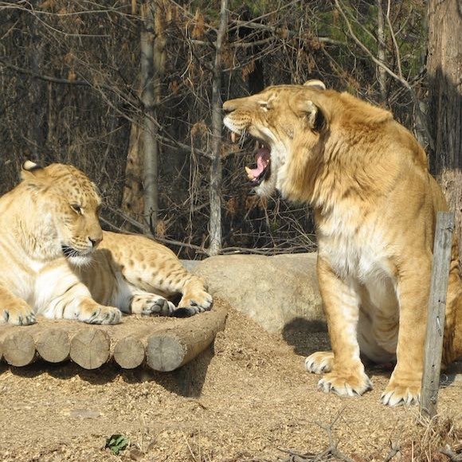
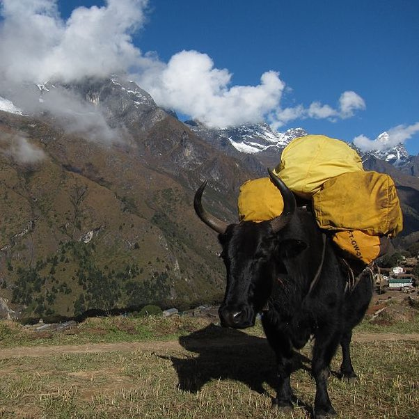
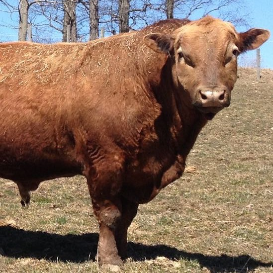

Hybrid Animals
In biology a hybrid, also known as cross breed, is the result of mixing, through sexual reproduction, two animals or plants of different breeds, varieties, species or genera. Using genetic terminology, it may be defined as follows.
—Wikipedia.

{kind=link}
Liger
The liger is a hybrid cross between a male lion (Panthera leo) and a female tiger (Panthera tigris). Thus, the liger has parents of the same genus but of different species. The liger is distinct from the similar hybrid tigon. While the Siberian tiger is the largest pure sub-species, ligers are believed to be the largest of all known extant felines.
—Wikipedia

{kind=link}
Dzo
A dzo (Tibetan མཛོ་ mdzo) is a hybrid between the yak and domestic cattle. The word dzo technically refers to a male hybrid, while a female is known as a dzomo or zhom. Alternative Romanizations of the Tibetan names include dzho, zho and zo. In Mongolian it is called khainag (хайнаг). There is also the English language portmanteau term of yakow; a combination of the words yak and cow, though this is rarely used.
—Wikipedia

{kind=link}
Beefalo
Beefalo, also referred to as cattalo or the American hybrid, are a fertile hybrid offspring of domestic cattle (Bos taurus), usually a male in managed breeding programs, and the American buffalo (Bison bison), usually a female in managed breeding programs.[1][2] The breed was created to combine the characteristics of both animals for beef production.
—Wikipedia
Your Favorite
Tell us about your favorite hybrid animal.